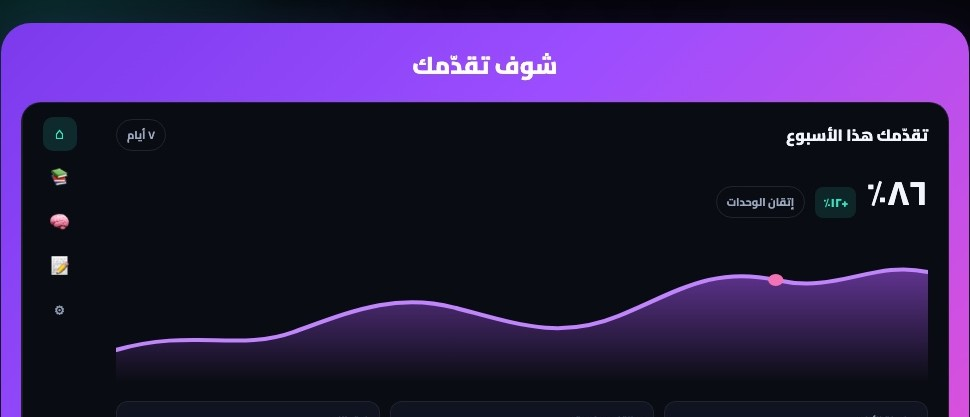
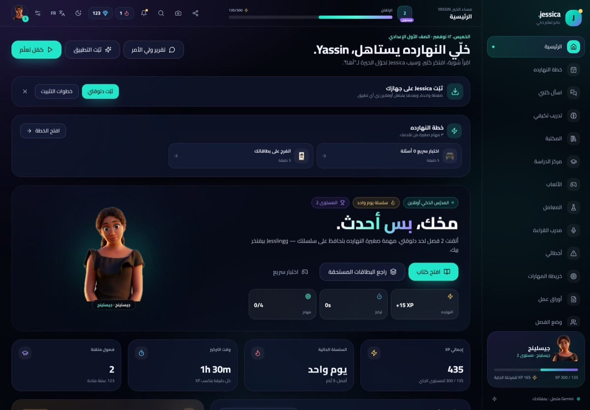
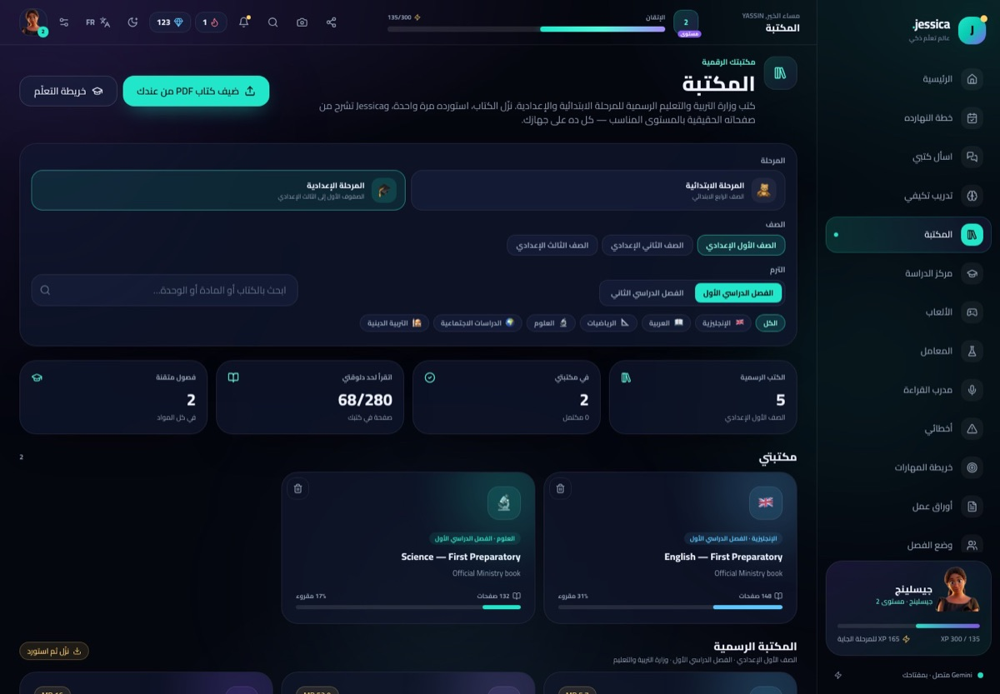

📚
كتب الوزارة
نزّل الكتاب واستورده مرة واحدة، وجيسيكا تقرأ منه الصفحة اللي انت فيها وترد من الكتاب نفسه.
Jessica بتقرأ كتاب الوزارة معاك، تشرح أي صفحة، تلخّص، تعمل امتحانات وبطاقات مراجعة، وتبني لك خطة مذاكرة يومية — على جهازك، ومن غير اشتراك.

مش مجرد PDF ولا شات بوت — عالم مذاكرة كامل مبني على كتابك الحقيقي.
نزّل الكتاب واستورده مرة واحدة، وجيسيكا تقرأ منه الصفحة اللي انت فيها وترد من الكتاب نفسه.
حدّد أي فقرة → شرح، تبسيط، ترجمة، أو اسأل عن الصفحة كلها. بيجاوب بالعربي والمصري.
ملخصات، كويزات، بطاقات بتباعد ذكي، امتحان محاكاة بتوقيت وحفظ تلقائي.
٣ مهام على قد يومك، مبنية من أضعف مهاراتك وأقرب امتحان ووحدتك الحالية.
عالم منفصل للأطفال: هدية يومية، ستيكرز، دروس ٥ دقايق، وخريطة مغامرات.
بوابة محمية، وقت استخدام محدد، مهام، وتقرير أسبوعي جاهز للطباعة أو واتساب.
بعد أول تحميل، الكتب والبطاقات والامتحانات تشتغل بدون نت، وتثبّته على الموبايل.
لا حساب، لا سيرفر، ولا بيانات بتطلع من جهازك. المفتاح والكتب محفوظين محليًا.
نظرة سريعة على التطبيق: كتب الوزارة، المدرس الذكي، والخطة اليومية.
صور حقيقية من التطبيق — مش تصميمات.


كتالوج رسمي لكل صف، ولو مادتك مش متاحة تقدر تستورد كتابها بنفسك في ثواني.
موبايل، تابلت، آيباد أو كمبيوتر — ضغطة واحدة وبيشتغل زي أي تطبيق.

على الكمبيوتر؟
امسح الكود بكاميرا الموبايل، أو اكتب اللينك القصير:
is.gd/jessicaapp
أول مرة بس، وبعدها التطبيق بيفتح على طول.
من Google AI Studio في دقيقة. جوه التطبيق فيه فيديو شرح لو مش عارف.
نزّل كتاب الوزارة من قائمة الصف، أو ارفع أي PDF من جهازك.
اقرأ، اسأل، راجع، وامتحن نفسك — وجيسيكا بتتابع تقدمك.
مفيش سيرفر، مفيش حساب، ومفيش تتبع. المفتاح والكتب والتقدم كله على جهازك، وتقدر تصدّر نسخة احتياطية أو تمسح كل حاجة في أي وقت.
أيوه، مجاني بالكامل ومفتوح المصدر. محتاج بس مفتاح Gemini مجاني من Google AI Studio، وده مجاني كمان.
أول تحميل واستيراد كتاب يحتاج نت. بعد كده القراءة والبطاقات والامتحانات المحفوظة تشتغل أوفلاين. ميزات الذكاء الاصطناعي تحتاج اتصال.
كل حاجة على جهازك فقط: المفتاح في المتصفح، والكتب في تخزين التطبيق المحلي. مفيش سيرفر ومفيش حساب.
أيوه. افتح اللينك في Safari، اضغط زر المشاركة، وبعدين «إضافة إلى الشاشة الرئيسية».
أيوه. بتختار نوع مدرستك (حكومي / خاص / لغات / أزهر) والتطبيق يظبط المواد والكتب المناسبة — مدارس اللغات بتشوف الفرنساوي والألماني كمان.
استورد أي PDF من جهازك، وجيسيكا تفهرسه وتعلّم منه عادي.